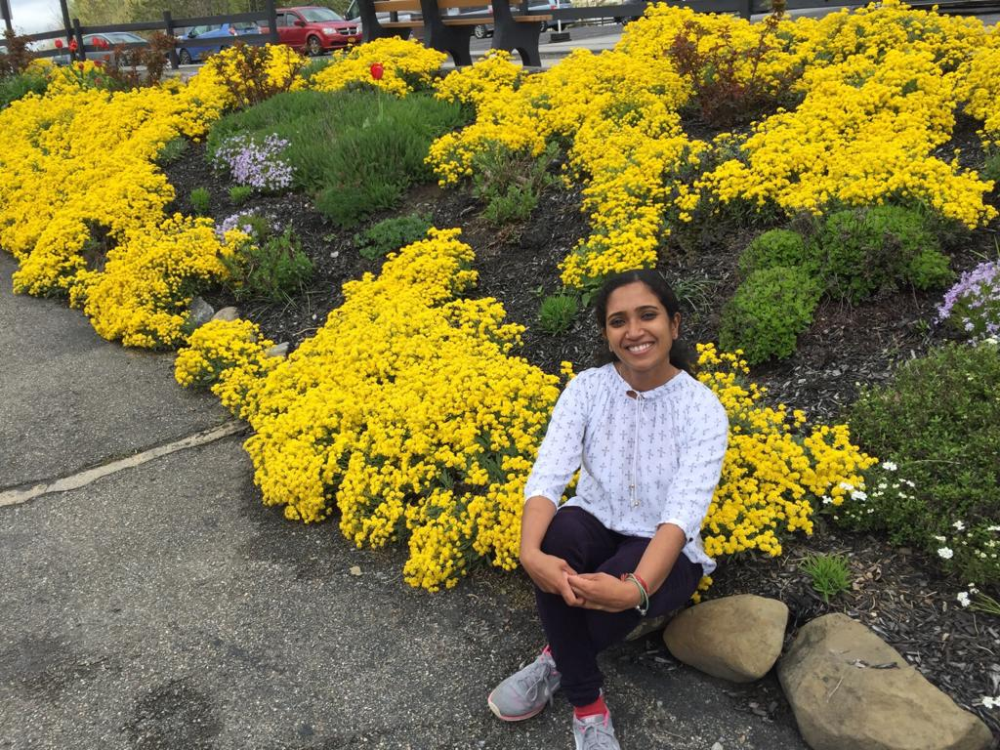

Hi! I am Ajuna.
4 Facts About Me
One - I love to cook! I could spend hours and hours in the kitchen trying out new recipes without getting exausted.
Two - I love gardening. Every summer I enjoy planting vegetables and flowers in my backyard.
Three - I enjoy doing canvas and glass paintings. I think I inherited that interest from my dad.
Four - I love BREAD. I could eat it 365 days, three times a day and still want more.
My background.....
My journey to design was not typical and my career didn't begin in UX. I graduated in Biotechnology, worked for a couple of years in the Health Care Industry and have also volunteered at several non profit organizations. While these experiences run the gamut of industries the common thread that ties them together is my passion to help people and understand their needs. While I found great value in the work I was doing, I still felt that this was not the career I envisioned for myself. I wanted to do something more creative that involved critical thinking as well as helping others. It was then that I realized that Design has always been my passion. After talking to multiple designers and reading extensively on what UX is, I was convinced that this was the field I wanted to break into.
Taking a Leap....
The online web design and development calsses as well as the UX Design Bootcamp helped me understand what it meant to be a problem solver and how to refocus the different skills and talents I had previously accrued over the years into a process that produces user centered products.
Now....
I am currently pursuing a full time position in the field of UI/UX. I bring with me a natural tendancy for empathy, as well as a passionate need to create effortless experiences. I’m on a journey to become the best at what I do. Along the way, I hope to work with amazing people and build invaluable experiences.